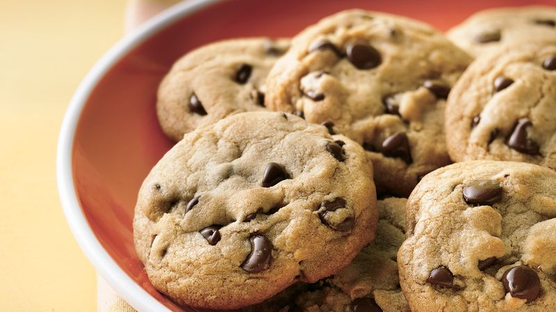

Cookies

Chocolate Chip Cookie
Here's a simple and delicious chocolate chip cookie recipe:
Ingredients:
- 1 Cup(226g) Unsalted butter
- ¾ Cup (150g) Sugar
- ¾ Cup (165g) Brown sugar
- 2 Eggs
- 1 Teaspoon vanilla extract
- 2 ¼ Cups (280g) All-purpose flour
- 1 Teaspoon baking soda
- ½ Teaspoon salt
- 2 Cups (340g) Semisweet chocolate chips
Preparing:
- Preheat oven to 350°F (175°C).
- Cream the butter and sugars in a large bowl, beat the softened butter, granulated sugar, and brown sugar until light and fluffy.
- Add the eggs and vanilla e beat in the eggs one at a time, followed by the vanilla extract.
- Mix the dry ingredients in a separate bowl, whisk together the flour, baking soda, and salt.
- Combine wet and dry ingredients gradually add the dry ingredients to the wet ingredients and mix until combined.
- Stir in the chocolate chips fold in the chocolate chips until evenly distributed.
- Scoop dough onto baking sheets drop spoonfuls of cookie dough onto a lined baking sheet, leaving about 2 inches between each cookie.
- Bake for 10-12 minutes, or until the edges are lightly golden.
- Cool on a wire rack before serving.
Enjoy your freshly baked chocolate chip cookies!